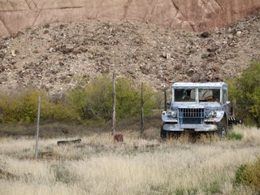

My life is over, but I will continue to blog about it
I have yet again postponed real life to become a student for several more years, this time a "graduate student" at the University of Utah. I'm joining an ecosystem ecology lab that focuses on studying biosphere-atmosphere interactions, the carbon cycle at multiple scales, and blah blah pollution blah feedbacks to blah-bla isotopic blablablah climate change bla-blah blah blablah. I don't know specifically what part of this research I'll be latching on to and developing into a thesis project yet, but as long as I keep sitting at my desk reading journal articles, gazing blankly out the window, reading some more, thinking about the metabolic theory of ecology, staring at the ceiling, reading all this weeks Nature articles that apply to my field, sending emails to professors, pondering, going to get coffee and then coming back to my desk for more reading, thinking, making lists of papers to read, staring, and so on, as I am currently doing almost every day of the week, I'll probably come up with something good in a few years.
So, what does that mean for this blog? I don't really know. I'll sit at my desk and think about it. One thing I do know is that I like this blog and I want to keep writing here, or at least continue writing in the same vein - that is, writing creatively about the things I do on a daily basis while bringing up the scientific thinking and processes behind it in a clear and interesting way. It helps me explain things to myself (and possibly others) and prevents me from getting desperately bored with my life in academia. I also like posting pictures.
One idea I have is to give this blog a makeover and turn it into my graduate student blog. I could archive the seed collecting blog posts somewhere, rearrange the links, change the title, make a few other minor adjustments, and then continue my blogging career. I could also just orphan this one and start a completely new blog. I don't know.
Anyways, here is a picture of an old broken-down truck sitting in a field at the Entrada field station, a new U of U research facility on the Dolores river that I visited last week.

posted by Greg @ 4:00 PM
4 comments
links to this post


{kind=link}
4 Comments:
yay! viva la blog!
Please do keep blogging. Best of luck finding your niche in Ecosystem Ecology. Is this a natural progression from thoughts formed in Utah's beautiful backways and byways?
-jeff h
This post has been removed by the author.
nony - it will, we will .... you know, live on. Thanks.
jeff - a natural progression....Yes. Ive had lots of time to think out there, and it all seems to come back around to carbon in the end. hope I see you again soon.
Post a Comment
Links to this post:
Create a Link
<< Home